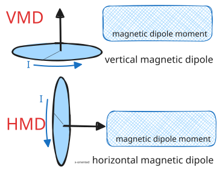
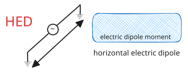
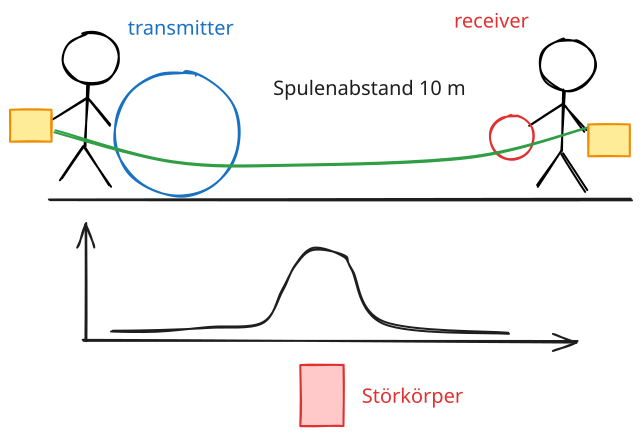
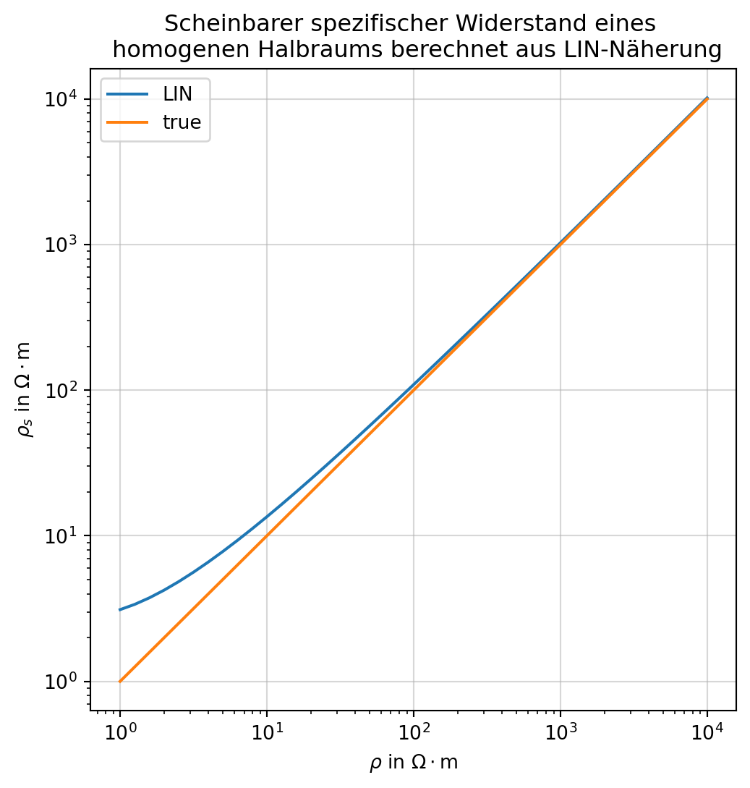
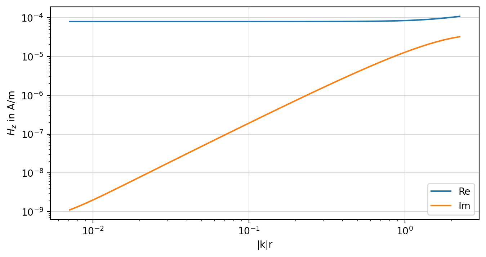
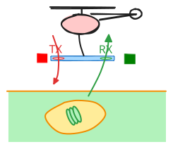
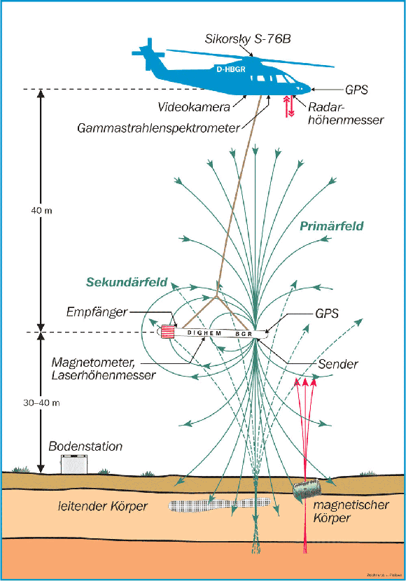
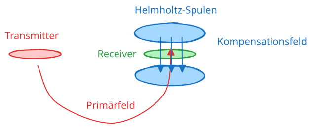
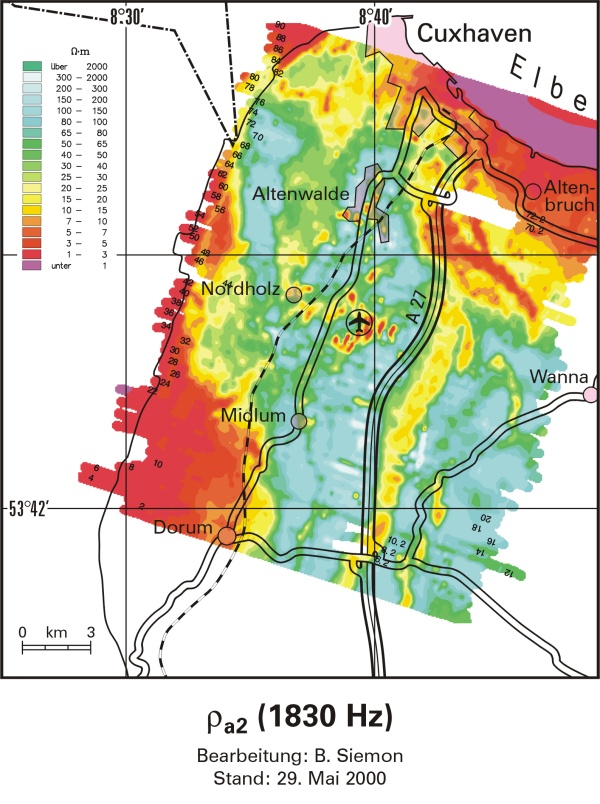
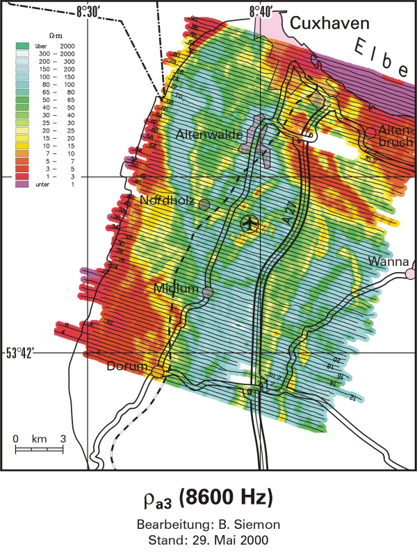

Über Transmitter TX (Spule, geerdetes Kabel) wird Feld angekoppelt.
Magnetfeld \(\mathbf{H}\)
Elektrisches Feld \(\mathbf{E}\)
Primäres, zeitlich variables Magnetfeld induziert im Leiter Wirbelströme. Diese besitzen wiederum ein Magnetfeld, das sich in Stärke, Richtung und Phase vom primären Feld unterscheidet.
Wir messen \(\vb B\) im Receiver RX als Funktion von Frequenz und Transmitter-Receiver-Abstand (Offset).
Frequenz und Offset sind technische Sondierungsparameter, die gesteuert werden können in Abhängigkeit von
Targettiefe
Targetgröße und Leitfähigkeit.
In Abhängigkeit von der geophysikalischen Fragestellung sind zwei methodische Varianten in Verwendung:
Kartierung
Sondierung
Kartierung durch Bewegung von TX und RX entlang eines Profils oder auf einer Fläche unter Beibehaltung des Abstandes (TX-RX-Offset) Sondierung durch Veränderung von Frequenz und/oder Offset.
Es gibt auch Varianten, die eine Kombination von Kartierung und Sondierung realisieren (Beispiel: Aero-EM)
Wir unterscheiden zwei grundsätzliche Varianten:
Abstandssondierung
Frequenzsondierung
13.2 Dipolquellen
13.2.1 Magnetischer Dipol

Schematische Darstellung eines horizontalen (HMD) und vertikalen magnetischen Dipols (VMD) mit Dipolmoment \(\mathbf{m}\)
13.2.2 Elektrischer Dipol

Schematische Darstellung eines horizontalen elektrischen Dipols (HED) mit Dipolmoment \(\mathbf{p}\)
13.3 EM-34

Schematisches Messprinzip und Messergebnis bei gutleitendem vertikalstehenden Störkörper (EM-34)
RHO = np.logspace(0, 4, 41)fig, ax = plt.subplots(figsize=(6, 6))ax.loglog(RHO, [rhoa(VCP(v, freq, offset, h), offset, freq) for v in RHO], label="LIN")ax.loglog(RHO,RHO, label="true")ax.set_title("Scheinbarer spezifischer Widerstand eines \n homogenen Halbraums berechnet aus LIN-Näherung")ax.set_xlabel(r"$\rho$ in $\Omega\cdot$m")ax.set_ylabel(r"$\rho_{s}$ in $\Omega\cdot$m")ax.legend()ax.grid(alpha=0.5)

13.3.6 LIN-Näherung
Wir stellen die Magnetfeldresponse eines VMD über einem homogenen Halbraum dar. Variiert wird hier nur die Leitfähigkeit, während die Frequenz konstant gehalten wird.
Wir beobachten einen typischen Verlauf von Real- und Imaginärteil.
Für die Kalibrierung der scheinbaren Leitfähigkeit bei der Anzeige der Messwerte wird folgendes ausgenutzt:
Annahme eines homogenen Halbraums
Realteil konstant
Imaginärteil ist nur eine Funktion von \(\sigma\), wenn \(\omega r^2\) konstant
Kalibrierung liefert scheinbare Leitfähigkeit\(\sigma_{a}\) in mS/m
Code anzeigen
data = np.array([VCP(1/ s, freq, offset, h) for s in sigma])Hz0 =-1.0/ (4* np.pi * offset**3)kr = np.array([np.abs(np.sqrt(-1j*2* np.pi * freq * np.pi *4e-7* s)) * offset for s in sigma])fig, ax = plt.subplots(figsize=(8, 4))ax.set_xlabel("|k|r")ax.set_ylabel(r"$H_{z}$ in A/m")ax.loglog(kr, np.abs(np.real(data)), label="Re")ax.loglog(kr, np.abs(np.imag(data)), label="Im")ax.legend()ax.grid(alpha=0.5)

13.4 Hubschrauber-EM
TX: Magnetischer Dipol
RX: Induktionsspule
Konfiguration: HCP
Kartierung mit Frequenzsondierung

Messprinzip Hubschrauber-EM

Aufbau eines Hubschraubermesssystems (Quelle: BGR)
13.4.1 Das Fugro DIGHEM System
DIGHEM
Aufgabe
Bestimmung der elektrischen Leitfähigkeit bis zu Tiefen von eta 150 m
Abstand TX-RX
7.9 bis 8.0 (für jede Frequenz verschieden)
Frequenzen in Hz
375, 1778, 8510, 37830, 129000
Spulenkonfiguration
HCP
Hersteller
Fugro Airborne Survey (Kanada)
Sensorhöhe
30 m
Fluggeschwindigkeit
140 km/h
Abtastrate
10 Hz
Räumliches Abtastintervall
4 m
Weitere Messgeräte
Cs-Magnetometer Geometrics (USA)
davon im Hubschrauber
Gammastrahlen-Spektrometer, DGPS, Höhenmesser
13.4.2 Messgröße HEM
Nach Kompensation (Auslöschung des Primärfeldes im RX) misst RX nur das sekundäre Magnetfeld \(\vb{H}_{s}\).
In HCP-Konfiguration beträgt das Vakuum-Feld im RX im Abstand \(r\) vom TX \[
H_{0}(r) = - \frac{1}{4 \pi r^{3}}.
\] Das im RX gemessene Vertikalfeld ist damit \[
H_{s}(\omega) = \vb{H}(\omega)\cdot \vb{e}_{z} - {H}_{0} = H_{z}(\omega) - H_{0}
\]

13.4.3 Darstellungsgrößen
Das komplexwertige kompensierte Magnetfeld wird auf das Vakuumfeld normiert und in Real- und Imaginärteil zerlegt.
\[
\overline R = \mathrm{Re} \left( \frac{H_{s}}{H_{0}} \right) = \frac{\mathrm{Re}(H_{z})}{H_{0}}-1 , \qquad \overline Q = \mathrm{Im} \left( \frac{H_{s}}{H_{0}} \right) = \frac{\mathrm{Im}(H_{z})}{H_{0}}
\] In der Praxis werden diese Größen in ppm (parts per million, \(10^{-6}\)) dargestellt: \[
R := \overline R \times 10^{6}, \qquad Q := \overline Q \times 10^{6}
\] R: Realteil oder real part
Q: Imaginärteil oder quadrature part
13.4.4 Beispiele: Salzwasserintrusion Cuxhavener Rinne (BGR)


13.4.5 Anwendungsbeispiel
HinweisLernziel
Darstellungsgrößen der Hubschrauberelektromagnetik
Wir erstellen synthetische Datensätze für eine horizontal-koplanare Spulenaufstellung. Der Spulenabstand beträgt 8 m. Die diskreten Frequenzen sind \[
f \in (387, 1820, 8225, 41550, 133200) \text{ Hz.}
\] Die spezifischen Widerstände der 4 Schichten sind \[
\rho \in ([50, 200], 100, 5, 1000) ~ \Omega\cdot m,
\] ihre Mächtigkeiten betragen \[
h \in (20, 30, 10) ~m.
\]
In der Aero-Elektromagnetik werden die Messwerte in folgender Weise dargestellt: \[
\begin{align}
R & = 10^6 \cdot \frac{\mathrm{Re}(H_z - H_z^0)}{H_z^0} = 10^6 \cdot \left(\frac{\mathrm{Re}(H_z)}{H_z^0}-1\right) \\
Q & = 10^6 \cdot \frac{\mathrm{Im}(H_z - H_z^0)}{H_z^0} = 10^6 \cdot \frac{\mathrm{Im}(H_z)}{H_z^0}
\end{align}
\]
def pos(data):"""Return positive data; set negative data to NaN."""return np.array([x if x >0else np.nan for x in data])def neg(data):"""Return -negative data; set positive data to NaN."""return np.array([-x if x <0else np.nan for x in data])fig, ax = plt.subplots(figsize=(6, 4))plt.plot(freq, pos(fhz_num.real), 'C0-', label='Real')plt.plot(freq, neg(fhz_num.real), 'C0--')plt.plot(freq, pos(fhz_num.imag), 'C1-', label='Imaginary')plt.plot(freq, neg(fhz_num.imag), 'C1--')plt.xscale('log')plt.yscale('log')plt.xlim([1e2, 1e6])# plt.ylim([1e-12, 1e-6])plt.xlabel('FREQUENCY (Hz)')plt.ylabel('$H_z$ (A/m)')plt.legend()ax.set_aspect('equal')ax.grid(alpha=0.5)plt.tight_layout()plt.show()